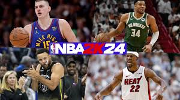
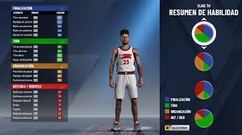
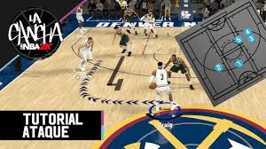

Es un videojuego de simulación de baloncesto que forma parte de la exitosa serie "NBA 2K". Desarrollado por Visual Concepts y publicado por 2K Sports, el juego ofrece una experiencia realista de baloncesto, con gráficos mejorados, controles refinados y una amplia gama de características tanto para jugadores individuales como para multijugador.
| Jugadores de la NBA |  | Estos son los atletas reales de la NBA, representados con gran detalle y realismo en el juego. Incluyen estrellas actuales como LeBron James, Kevin Durant y Stephen Curry, así como leyendas del pasado como Michael Jordan y Magic Johnson. |
| Personajes personalizados |  | En modos como MiCarrera y MiEquipo, los jugadores pueden crear y personalizar sus propios personajes, que pueden ser jugadores de baloncesto profesionales, gerentes generales o entrenadores. |
| Entrenadores y personal técnico |  | Además de los jugadores, el juego también presenta entrenadores y otros miembros del personal técnico de los equipos de la NBA, que pueden desempeñar un papel en la gestión y el desarrollo de los equipos en modos como MiCarrera y MiGM. |